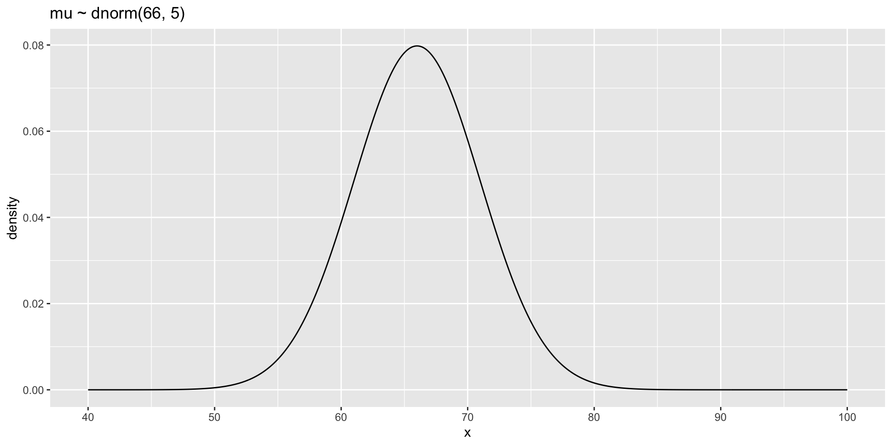

Code
library(tidyverse)
galton.data <- psychTools::galton\[\Large Y = b_{0} + b_{1}X +e\]
No need to think about setting up new t-test, ANOVAS, regressions, etc. ALL THE SAME.
We will focus on differ components rather than asterisks and p-values. New ideas will help us better interpret, evaluate, and utilize the model.
What are Bayesian models?
“Normal” regression with a different algorithm.
Results that represent a distribution rather than a point estimate and some uncertainty.
Priors that incorporate existing knowledge.
library(tidyverse)
galton.data <- psychTools::galtonlibrary(brms)
fit.1.bayesian <- brm(child ~ parent, data = galton.data,
backend = "cmdstanr",
file = "fit.1.b")summary(fit.1.bayesian) Family: gaussian
Links: mu = identity; sigma = identity
Formula: child ~ parent
Data: galton.data (Number of observations: 928)
Draws: 4 chains, each with iter = 2000; warmup = 1000; thin = 1;
total post-warmup draws = 4000
Population-Level Effects:
Estimate Est.Error l-95% CI u-95% CI Rhat Bulk_ESS Tail_ESS
Intercept 24.00 2.79 18.43 29.65 1.00 4697 2766
parent 0.65 0.04 0.56 0.73 1.00 4690 2929
Family Specific Parameters:
Estimate Est.Error l-95% CI u-95% CI Rhat Bulk_ESS Tail_ESS
sigma 2.24 0.05 2.14 2.34 1.00 4339 3163
Draws were sampled using sample(hmc). For each parameter, Bulk_ESS
and Tail_ESS are effective sample size measures, and Rhat is the potential
scale reduction factor on split chains (at convergence, Rhat = 1).library(tidybayes)
fit.1.bayesian %>%
spread_draws(b_Intercept, b_parent) %>%
ggplot(aes(x = b_parent)) +
stat_halfeye()Is made up of a series of educated guesses (via our algorithm), each of which is consistent with the data.
Great density, greater likelihood.
Unlike CI which every value is equally plausible until it is implausible because it is out of the CI. Not just a best guess and an SE around the best guess (as with Maximum Likelihood).
In standard practice we can assume this distribution (typically normal), but with bayes it can be flexible!
Is made of up of a series of educated guesses. Each dot represents a particular guess. Guesses that occur more often are considered more likely.
fit.1.bayesian %>%
spread_draws(b_Intercept, b_parent) %>%
ggplot(aes(x = b_parent)) +
stat_dotsinterval()Played a role in developing the thermonuclear bomb with one of the earliest computers. Published in 1953 but ignored within stats b/c it was published within a physics/chemistry journal. Took about until 1990 for desktop computers to run fast enough to do at home.
Many variants, but the general idea is a) propose an estimate value + noise N(0, \(\sigma\) ) then b) see how “likely” the data is given the estimate, c) based on some criteria (better than worse that some value) either accept or reject the estimate and d) repeat
data.frame(heads = 0:10, prob = dbinom(x = 0:10, size = 10, prob = .5)) %>%
ggplot(aes(x = factor(heads), y = prob)) +
geom_col(fill = "#562457") +
geom_text(aes(label = round(prob, 2), y = prob + .01),
position = position_dodge(.9),
size = 5,
vjust = 0) +
labs(title = "Binomial Distribution of Coin Flips",
subtitle = "n = 10, p = .5",
x = "Number of Successes (Heads)",
y = "Density") +
theme_classic(base_size = 16)
That is the parameter we want to estimate.
We can look at what p is consistent with (or not) based on our data (2 successes in 10 trials).
p <- seq(0.01, 0.99, by = 0.01)
loglike <- dbinom(2, size = 10, prob = p)
plot(loglike)
fit.1.bayesian %>%
spread_draws(b_Intercept, b_parent) %>%
ggplot(aes(x = b_parent)) +
stat_dotsinterval()Our posterior is literally made up of educated guesses by the algorithm
tidy_draws(fit.1.bayesian)# A tibble: 4,000 × 14
.chain .iteration .draw b_Intercept b_parent sigma lprior lp__
<int> <int> <int> <dbl> <dbl> <dbl> <dbl> <dbl>
1 1 1 1 27.1 0.598 2.34 -3.88 -2071.
2 1 2 2 25.9 0.617 2.12 -3.81 -2070.
3 1 3 3 25.8 0.620 2.15 -3.82 -2068.
4 1 4 4 20.2 0.702 2.30 -3.86 -2068.
5 1 5 5 24.2 0.641 2.16 -3.83 -2068.
6 1 6 6 23.3 0.655 2.16 -3.83 -2068.
7 1 7 7 24.4 0.642 2.18 -3.83 -2069.
8 1 8 8 25.8 0.620 2.20 -3.84 -2067.
9 1 9 9 25.4 0.625 2.20 -3.84 -2067.
10 1 10 10 23.1 0.660 2.23 -3.84 -2067.
# ℹ 3,990 more rows
# ℹ 6 more variables: accept_stat__ <dbl>, treedepth__ <dbl>, stepsize__ <dbl>,
# divergent__ <dbl>, n_leapfrog__ <dbl>, energy__ <dbl>Bayesian analysis counts all ways that something can happen (according to assumptions/model). Assumptions with more ways that are consistent with data are more plausible.
This method is not demonstrably different than standard approaches. Standard likelihood approaches use the values that are most consistent with the data as an estimate. Try out all possible numbers and then tells you which one is most likely.
Where Bayes differs, is we will focus beyond just a “best estimate”
Our posterior (ie different educated guesses at a the correct parameters; distribution of plausible values) is highlighting: that there is no ONE result, that there are many possible results that are consistent with the data.
fit.1.bayesian %>%
spread_draws(b_Intercept, b_parent) %>%
ggplot(aes(x = b_parent)) +
stat_dotsinterval()
Priors insert knowledge you have outside of your data into your model
This can seem “subjective” as opposed to the more “objective” way of letting the data speak.
Take our height example where we are fitting \(\Large Child = b_{0} + b_{1}Parent +e\)
We need to put priors on each parameter we want to estimate, here \(b_{0}\) & \(b_{1}\) (and e).
\(b_{0}\) is the intercept and reflect average child height when parent height is centered.
We know, roughly, what average height of adults are so we can create a distribution, say ~N(66 (5.5 ft), 5). That means we are pretty sure (95%) the average height is between ~4’8 and 6`4
p.0 <-
tibble(x = seq(from = 40, to = 100, by = .1)) %>%
ggplot(aes(x = x, y = dnorm(x, mean = 66, sd = 5))) +
geom_line() +
scale_x_continuous(breaks = seq(from = 40, to = 100, by = 10)) +
labs(title = "mu ~ dnorm(66, 5)",
y = "density")
p.0
We could argue that the \(b_{1}\) parameter (which indexes the strength of association between parent and child height) is positive. But we don’t want to stack the deck.
Let’s center it around zero, saying that the most plausible estimate is no association, but that we are willing to entertain some strong effects in either direction.
N10 <- ggplot(data.frame(x = c(-35, 35)), aes(x)) +
stat_function(fun = dnorm, n = 100, args = list(0, 10))+
labs(title = "B ~ Normal(0, 10)")
N5 <- ggplot(data.frame(x = c(-35, 35)), aes(x)) +
stat_function(fun = dnorm, n = 100, args = list(0, 5)) +
labs(title = "B ~ Normal(0, 5)")
N1 <- ggplot(data.frame(x = c(-35, 35)), aes(x)) +
stat_function(fun = dnorm, n = 100, args = list(0, 1)) +
labs(title = " B ~ Normal(0, 1)")
N2 <- ggplot(data.frame(x = c(-35, 35)), aes(x)) +
stat_function(fun = dnorm, n = 100, args = list(0, 2)) +
labs(title = "B ~ Normal(0, 2)")
library(patchwork)
(N10 | N5 )/
(N1 | N2 )
It means, BEFORE WE SEE THE DATA we are comfortable with different regression lines. For N(0,5) this is what we would expect:
pp <-
tibble(n = 1:100,
a = rnorm(100, mean = 68, sd = 5),
b = rnorm(100, mean = 0, sd = 5)) %>%
expand(nesting(n, a, b), height = range(galton.data$parent)) %>%
mutate(c.height = a + b * (height - mean(galton.data$parent)))
g.pp <- pp %>%
ggplot(aes(x = height, y = c.height, group = n)) +
geom_line(alpha = 1/10) +
coord_cartesian(ylim = c(36, 96))
g.ppA model that makes impossible predictions prior to seeing the data isn’t too useful. Why waste the effort? We often know what values are likely, given what we know about effect sizes
We entertain impossible values with standard “frequentist” methods. They have implicit priors such that all values, from negative infinity to positive infinity are equally likely.
If we use priors from a uniform distribution we will get the EXACT same results as a frequentist method.
\[p(\theta | data) \propto \frac{p(data | \theta) \times p(\theta )}{p(data)}\] P(θ|data) is the posterior probability.
P(θ) is the prior probability.
p(data| \(\theta\) ) is the likelihood.
p(data) can be ignored, it is just a normalized coefficient
Priors influencing Posterior
What is our regression estimate again?
fit.1.bayesian %>%
spread_draws(b_Intercept, b_parent) %>%
select(b_parent) %>%
mode_hdi(.width = c(.95))# A tibble: 1 × 6
b_parent .lower .upper .width .point .interval
<dbl> <dbl> <dbl> <dbl> <chr> <chr>
1 0.645 0.562 0.725 0.95 mode hdi With a prior for b0 of N(0, .5)
fit.1.bayesian %>%
spread_draws(b_Intercept, b_parent) %>%
ggplot(aes(x = b_parent)) +
stat_slab() +
stat_function(data = data.frame(x = c(-2, 2)), aes(x), fun = dnorm, n = 100, args = list(0, .5))